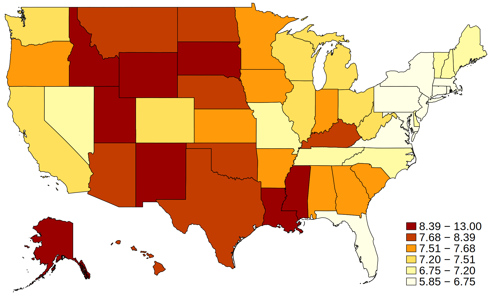

Stata provides two ways for Python and Stata to interact, and we refer to these mechanisms collectively as PyStata.
Python can be invoked from a running Stata session so that Python’s extensive language features can be leveraged from within Stata.
. python:
----------------------------------------------- python (type end to exit) -----
>>> print("Hello!")
Hello!
>>> end
-------------------------------------------------------------------------------
Stata can be invoked from a standalone Python environment via the pystata Python package. It includes three IPython (interactive Python) magic commands and a suite of API functions for interacting with Stata.
use ./data/covid19_adj, replace
grmap, activate
drop if province_state == "Alaska" | province_state == "Hawaii"
spset, modify shpfile(usacounties_shp)
grmap confirmed_adj, clnumber(7)
sysuse census
rename (state state2) (statename state)
gen babyperc=poplt5/pop*100
maptile babyperc, geo(state)


stata.run('sysuse sandstone, clear')
D = stata.nparray_from_data("northing easting depth")
ax = plt.axes(projection='3d')
plt.xticks(np.arange(60000, 90001, step=10000))
plt.yticks(np.arange(30000, 50001, step=5000))
ax.plot_trisurf(D[:,0], D[:,1], D[:,2], cmap=plt.cm.Spectral, edgecolor='none')
for i in range(0, 360, 10):
ax.view_init(elev=10., azim=i)
plt.savefig("../gif/sandstone"+str(i)+".png")
with io.get_writer('../gif/sandstone.gif', mode='I', duration=0.5) as writer:
for i in range(0, 360, 10):
image = io.imread("../gif/sandstone"+str(i)+".png")
writer.append_data(image)
writer.close()